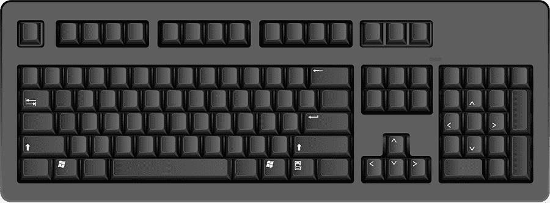
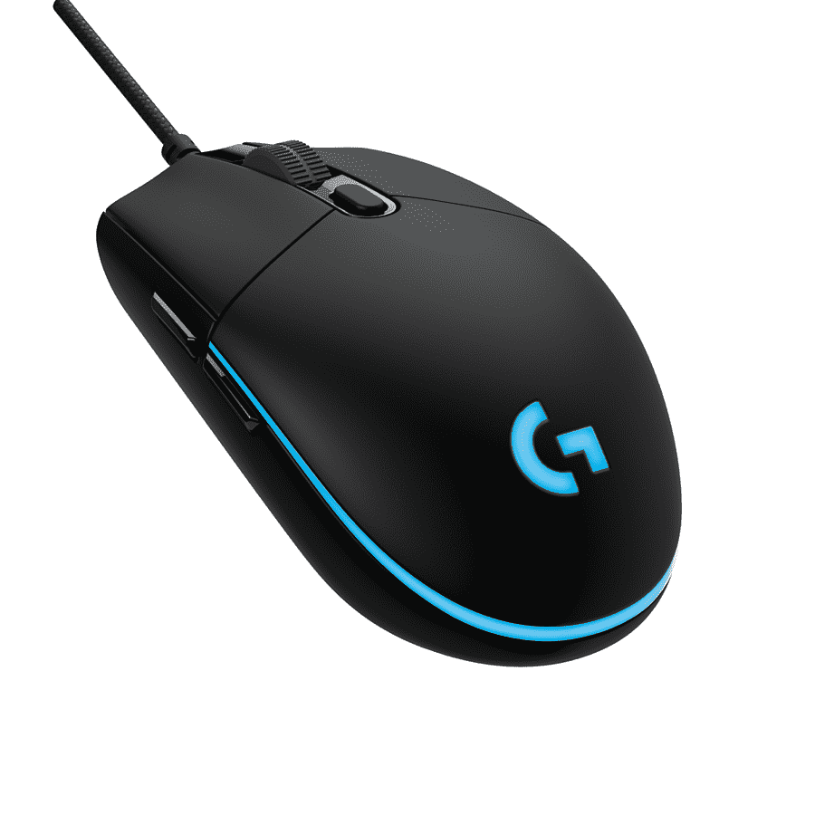
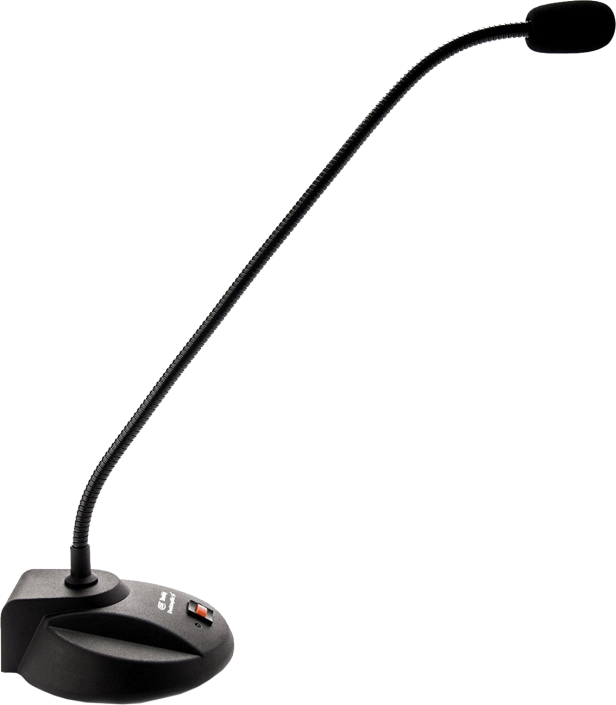

2.1. Periféricos de Entrada
Dispositivos que permiten introducir datos e instrucciones a la computadora.

Teclado

Ratón

Micrófono
 Escáner
Escáner
Convierten información física o análoga en digital.
1 / 11